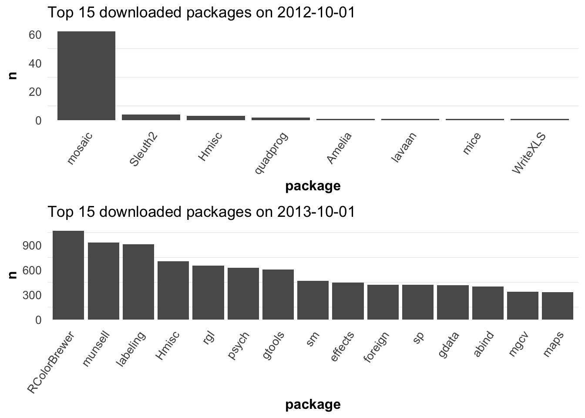
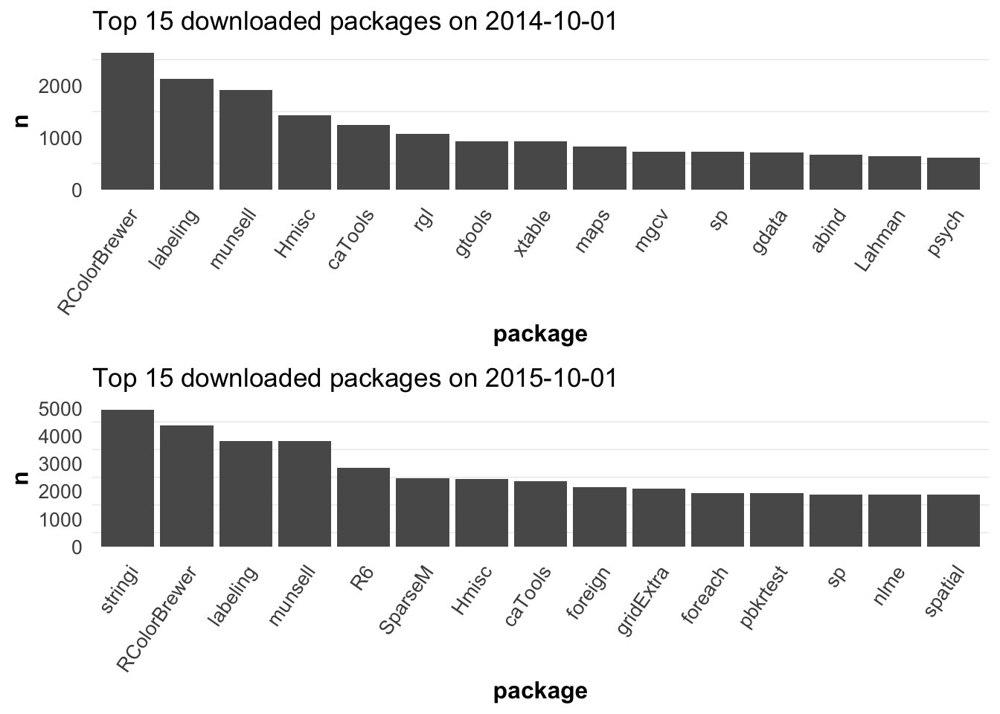
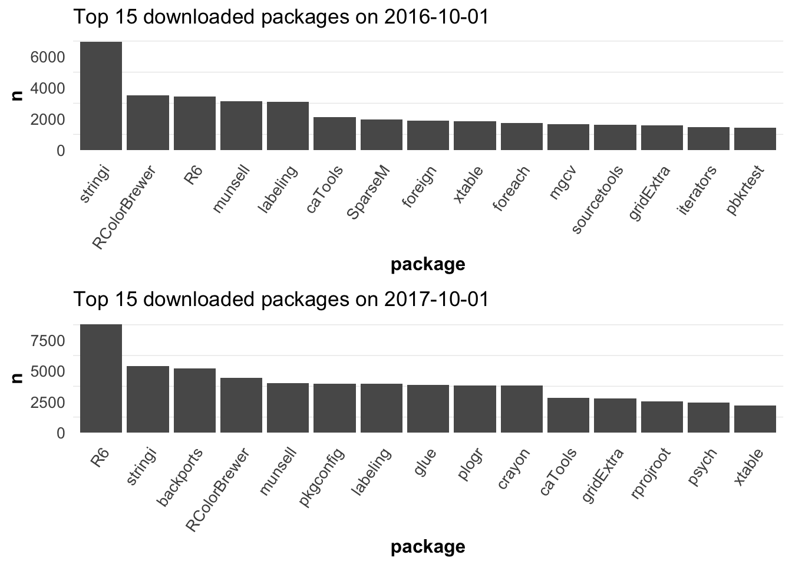
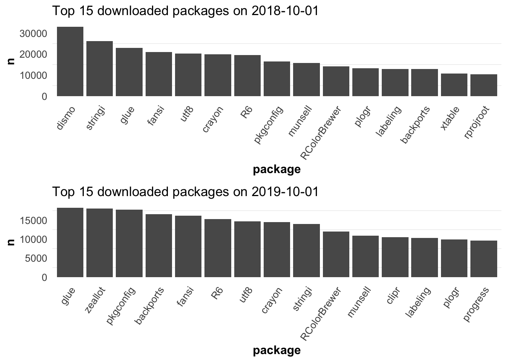

Chapter 2 Analysis
2.1 Daily top 15 downloaded packages

2.2 Compare last two years’ downloads with the release date
- Packages for Time Series Analysis
It can be seen from Figure 2.1 that although package fable is older than forecast, its download count is much less than that of forecast.
And we could see that the most downloaded package is zoo published on 2021-03-09, and next is forecast. So we can see that among time series packages, the two packages with the highest downloads have relatively new release dates. At the same time, we also notice that the number of downloads of package slider with the latest release date is not ideal. This may be because it is too new, few people know about it, and people are used to the old package and probably tend not to use the new one.
p.s. very interesting point : the most downloaded zoo does not have a github version, while the second downloaded forecast does have one.
Figure 2.1: The older package ‘fable’ has less download count than that of package ‘forecast.’
- Bayesian packages for general model fitting
Let’s have a look at the bayesian packages used for general model fitting. It can be seen from Figure 2.2 that the most downloaded packages are two with relatively late release dates : arm and loo. Then the two packages bayesm and mcmc with the earliest release date were moderately downloaded. At the same time, we can also notice that the package with the smallest downloads named nimble also comes from the relatively recent date.
Therefore, in this type of packages, we can say that the later the release date, the higher the download volume of the package. But there are still some special cases. That is even if the release date is later, the download volume is still not ideal, which may be due to other reasons.
Figure 2.2: last two years’ downloads with the release date for bayesian general model fitting packages.
- Econometrics for basic linear regression
In order to test whether this is the case in other areas, let’s turn our attention to econometrics packages for basic linear regression.
It can be seen from Figure 2.3 that the latest package sandwich has the highest downloads, while the downloads of nonnest2 with the earliest release date is much lower than it.
This is very similar to Bayesian’s case, that is, the latest packages tend to have higher downloads, with some special cases, such as the release date of packages whose downloads is highest or lowest may be in the middle position.
Figure 2.3: The latest package ’sandwich` has the highest downloads.